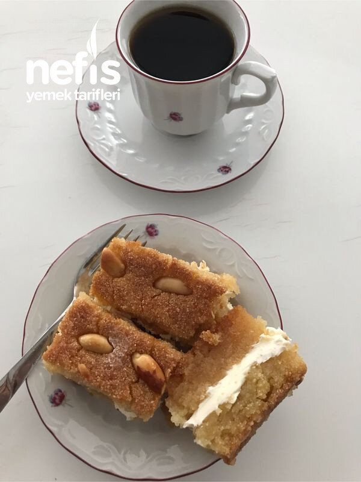

🍽️ 12-14 kişilik⏱️ Hazırlık: 15 dk🔥 Pişirme: 40 dk🏷️ Tatlı Tarifleri🏷️ Geleneksel Tatlılar
Malzemeler
- 1 kg irmik
- 2 su bardağı su
- 2 su bardağı şeker
- 2 adet kabartma tozu
- İstenirse vanilya
- Üzerini süslemek için fıstık
- 7 bardak şeker
- 4 bardak su
- 1/2 (yarım) limon
- İsteğe bağlı piştikten sonra aralarına kaymak
Hazırlanışı
- Önce şerbeti kaynatıyoruz.7 bardak şeker ve 4 bardak su ile şerbeti kaynatıyoruz (orta kıvamda).
- Ocağı kapatmadan 1/2 limon sıkılır.
- 1 kg irmik, 2 bardak şeker, 2 bardak su, 2 paket kabartma tozu şeker eriyene kadar karıştırılır.
- Tepsinin ya da borcamın altına şerbet sürülür.
- İrmikli karışım tepsiye dökülür.
- Üzeri düzeltilir, kesilir ve fıstıklar dizilir.
- 180-200 derecede kızarasıya kadar pişirilir.Piştikten sonra sıcak tatlıya ılık şerbet dökülecek.5 dakika daha pişirilecek.
- Fırından çıkarılarak üzeri tepsiyle kapatılacak.
- Kestiğimiz yerlerden bir kez daha kesiyoruz.
- 8-10 saat bekletilir.(istenirse dilim şambali ortadan kesilerek arasına kaymak sürülerek te servis yapılabilir.Kaymaksız da süper lezzetli).Nefis şambalimiz servise hazır.Afiyet olsun 😊.